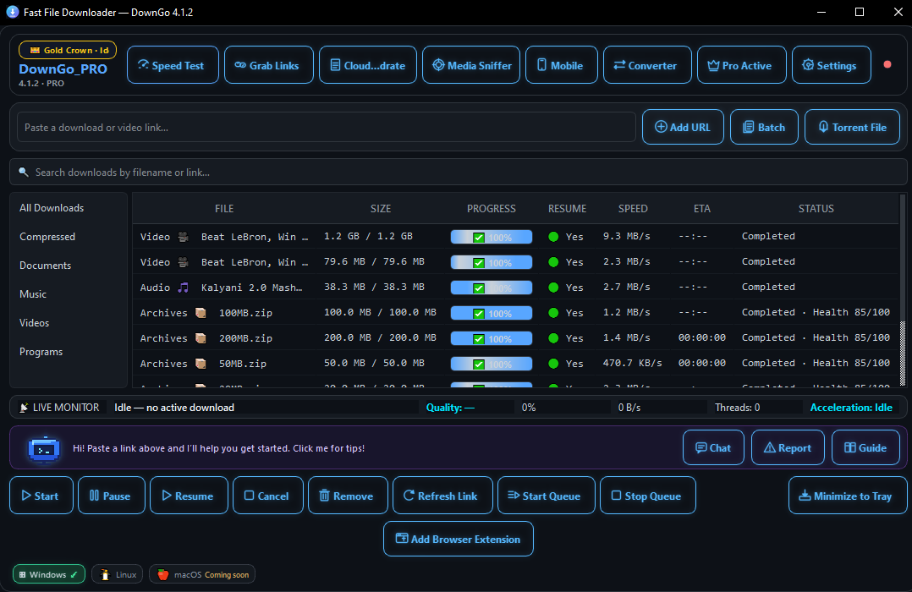
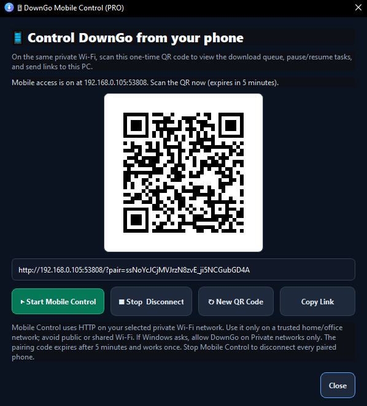
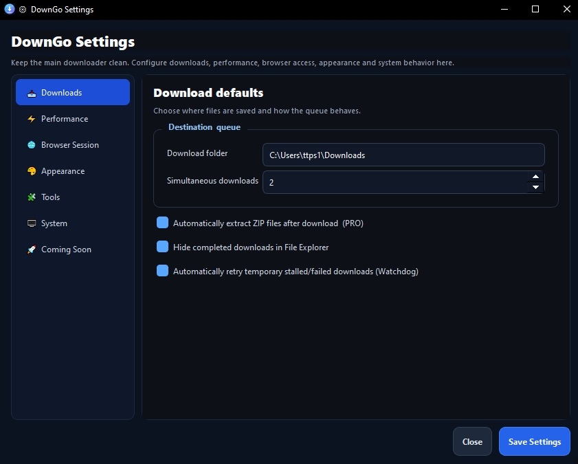
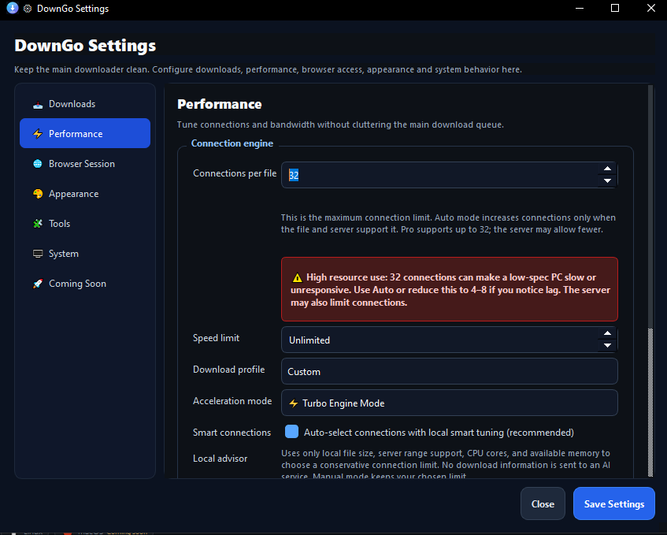
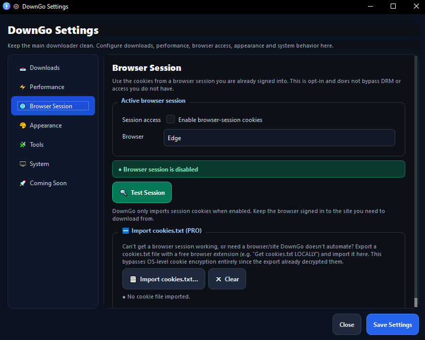
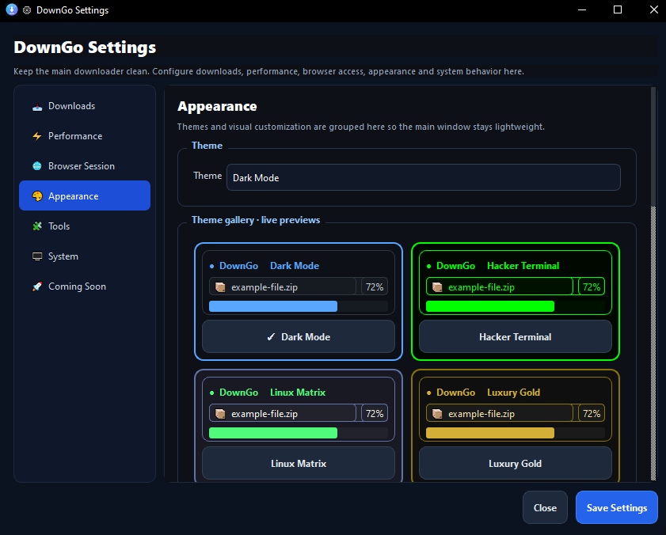

Adaptive downloads and recovery
Monitor size, progress, speed, ETA, and status. Pause, resume, or retry when supported by the file host. Parallel connections and actual speed depend on the source server and network.
Windows release · 4.1.2
Explore the DownGo download manager for Windows, including its download queue, stream inspector, link grabber, cloud hydration, mobile controls, and settings.
DownGo supports pause, resume, and parallel connections when the source server allows them. Free and Pro limits differ; connection count does not guarantee faster downloads. Availability of some tools depends on the source, system, network, and license.
Download workflow
Use the main queue for everyday file transfers and open focused tools when you need more detail.
Monitor size, progress, speed, ETA, and status. Pause, resume, or retry when supported by the file host. Parallel connections and actual speed depend on the source server and network.
Organize active, queued, and completed files by category, and add several supported links to manage them together.
Review source-provided audio and video formats, resolution, codec, bitrate, and protocol before choosing a stream.
Find page links, filter results, and select items for the queue. Review links carefully; a page scan can include navigation and image assets as well as files.
Inspect supported cloud share links and review file metadata and resume support before beginning a local transfer. NTFS sparse allocation is available only on supported Windows destinations.
Pair a phone with a temporary QR code to view and manage the PC queue over a trusted private Wi-Fi network.
View measured throughput, response time, jitter, and request loss. Test results vary with your device, network conditions, and test endpoint.
Choose destination, simultaneous tasks, speed limit, profile, and connection ceiling. Up to 32 connections are available in Pro when the server allows them; large counts may increase CPU and memory use.
Optionally use browser-session cookies for authorized downloads and send supported links through the DownGo browser extension. Cookie access is opt-in.
Preview themes and access available tools such as Scheduler, Smart Download Rules, Watch Folder, Download Insights, and performance modes.
DownGo 4.1.2 screenshot gallery
These screenshots show DownGo 4.1.2 on Windows. Select an image to open its full-size version.











Choose your edition
Get the Windows app from Microsoft Store. See the separate Linux page for its package version and installation instructions.